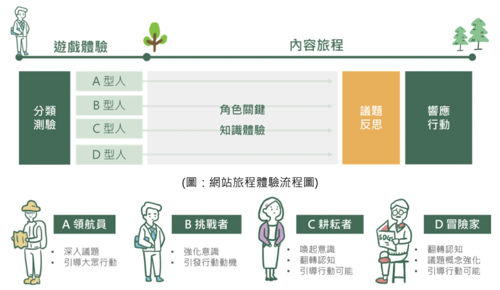
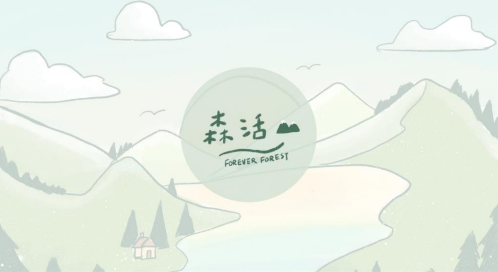
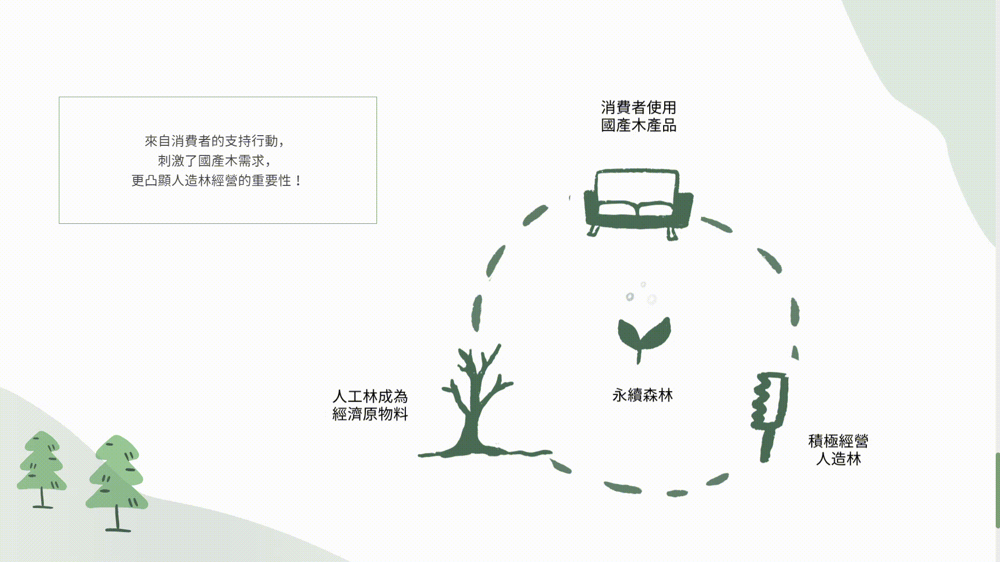
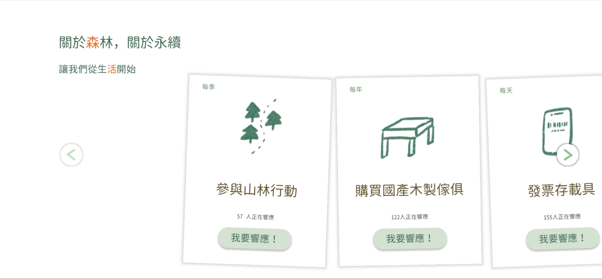

森活：森林永續議題倡議動畫網頁
專案背景
本專案為第五屆台灣青年黑客松競賽作品，團隊以聯合國永續發展目標「SDGs15：陸域生態」為主題，設計並製作網站。我們以「森林經營」為主軸，透過情境化體驗，引導大眾關注議題，並拆解議題、傳遞有效資訊，提升對陸域生態的認識。同時，運用科技工具呼籲行動，推動公眾響應。
網站體驗設計
我們期待能依照使用者性質分類，進行不同議題重點內容的闡述，以達成使用者之議題關鍵知識辨別的目的。在使用體驗上，將透過「遊戲」進行分類，以旅程故事方式呈現整體網站使用體驗。
在分類遊戲體驗環節，將利用環境小問答方式，計算「議題知識力」與「議題行動力」比分，後將使用者分類至四種不同項線群像，進行該群像之內容旅程體驗，體驗流程如下圖所呈現：

成果展示





設計系統架構規劃與整理